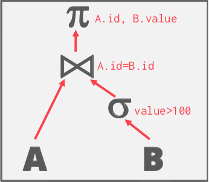
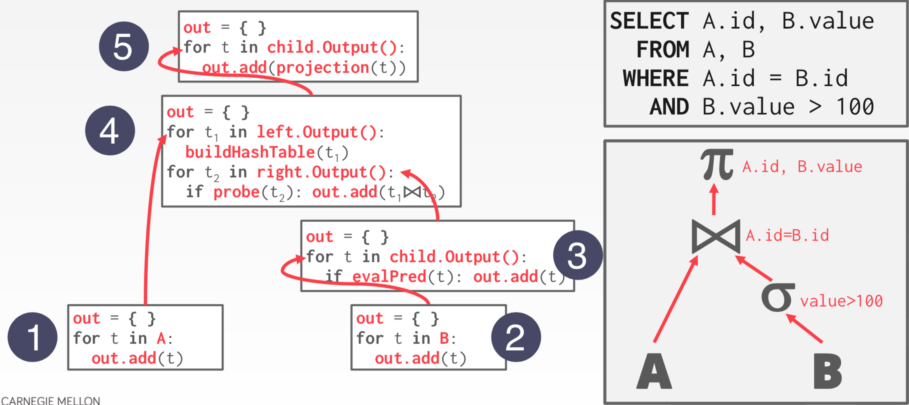
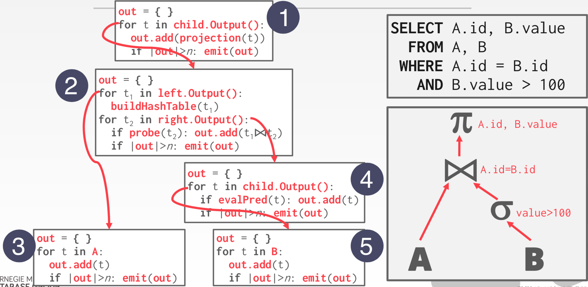

查询处理
查询计划：算子以一个树的方式组织，数据从叶子流向根节点。根节点的输出是查询的结果。
SELECT A.id, B.value FROM A, B WHERE A.id = B.id AND B.value > 100;

处理模型
DBMS 的处理模型定义了系统如何执行一个查询计划。
- 对不同负载有不同的权衡。
三种方法：
- 迭代器模型
- 物化模型
- 向量化/批量模型
迭代器模型
每个查询计划算子实现一个 next 函数。
- 每次调用，算子返回一个元组或者 null 标记。
- 算子实现一个循环调用孩子的 next 方法来获取元组然后处理。
自上向下的计划处理。也称之为火山或者管线模型。

迭代器模型被大部分 DBMS 使用，对元组管线化。
一些算子会阻塞直到孩子节点处理了所有的元组。Join, subquery, order by。
输出控制很容易。如 limit。
使用迭代模型的数据库：SQLite，cloudera IMPALA，DB2，nuoDB，Oracle，MySQL，PostgreSQL，SQL Server，VERTICA，Greenplum。
物化模型
每个算子一次处理所有输入，一次发送所有输出。
- 算子将其输出物化为单个结果
- DBMS 可以下推提示信息来避免扫描太多元组
自底向上的处理。

对于 OLTP 更友好，因为通常一次仅返回很少的元组。
- 更少的执行和协调开销
对有大量中间结果的 OLAP 并不友好。
使用物化模型的数据库：monetdb，VOLTDB，HYRISE
向量化模型
赫尔迭代器模型类似，每个算子实现 next 函数。
每个算子发送一批元组而不是单个元组。
- 每个算子内部循环处理多个元组。
- 批量的大小基于硬件或者查询属性变化。

对于 OLAP 查询比较友好。
- 大量减少了每个算子调用的梳理。
- 算子可以使用 SIMD 指令来处理一批元组。
使用向量化模型的数据库：vectorwise，Peloton，presto，SQL Server，Oracle，DB2。
| 迭代器 | 物化 | 向量化 | |
|---|---|---|---|
| 方向 | 自顶向下 | 自底向上 | 自顶向下 |
| 元组 | 单个 | 全部 | 批量 |
| 适用 | 通用 | OLTP | OLAP |
访问方法
访问方法用于访问保存在表中的数据。在关系代数中没有定义。
三种常用的方法：
- 顺序扫描
- 索引扫描
- 多索引/位图扫描
顺序扫描
对于在表中的每一页：
- 从缓存池中获取
- 迭代每个元组然后检查是否满足条件
DBMS维护一个内部的 cursor 跟踪最后的页面/slot。
for page in table.pages: for t in page.tuples: if evalPred(t): // Do Something!
顺序扫描优化：
顺序扫描通常是 DBMS 执行一个查询的一种最差的方法。
顺序扫描优化：
- 预取
- 并行
- 旁路缓存池
- 区域映射
- 延迟物化
- 堆聚集
索引扫描
DBMS 获取一个索引来找到查询需要的元组。
使用哪个索引依赖于：
- 索引包含的属性
- 查询引用的属性
- 属性的值域
- 谓词构成
- 索引是否有唯一或者非唯一 key
如果DBMS可以使用多个索引进行查询：
- 使用每个匹配的索引计算记录ID的集合。
- 根据查询的谓词（并集与交集）组合这些集合。
- 检索记录并应用任何剩余的条款。
SELECT * FROM students WHERE age < 30 AND dept = 'CS' AND country = 'US'
使用一个 age 上的索引，使用一个 dept 上的索引
- 我们先获取满足 age<30 的记录
- 然后获取满足 dept='CS' 的记录
- 获取记录然后检查 country='US'
表达式求值
DBMS 表达 WHERE 子句为一个表达式树。
在树中节点表示不同的表达式类型：
- 比较（=, <, >, !=）
- AND，OR
- 算术运算符（+，-，*，/，%）
- 常量值
- 元组属性引用